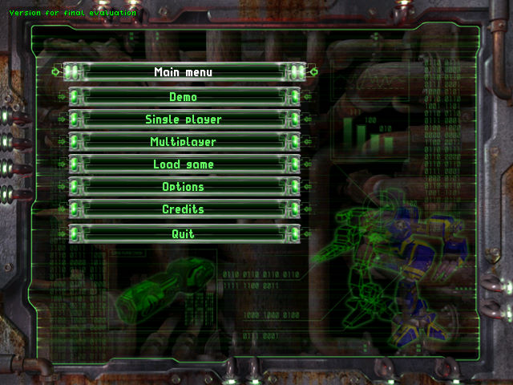
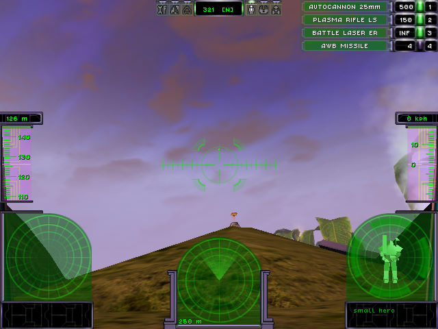

名稱：鐵血悍將：鐵甲戰略 (Parkan: Iron Strategy，英文版) 簡介：Nikita 2001年出品的即時戰略遊戲，以第一人稱射擊方式戰鬥，由GameXP代理發行 [待補]。

備註：本版主畫面有evaluation字樣，應為試用版光碟，目前尚找不到英文正式版光碟。與 俄文版內容相比，各資料檔都存在，差異多在文字部份，因此尚不知本版與正式版相 比，有何限制。 保護：光碟 備註：VirtualBox無法執行，虛擬機請使用VMware。